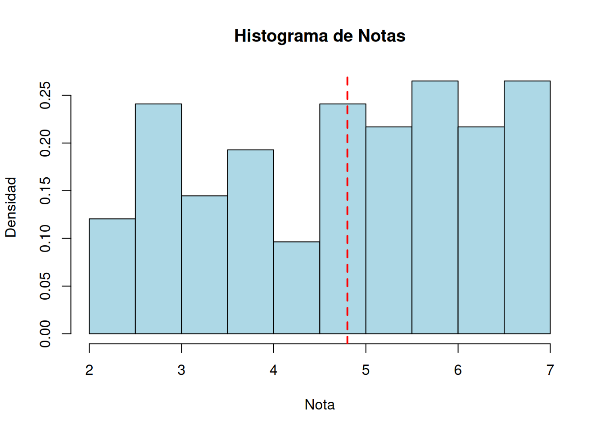
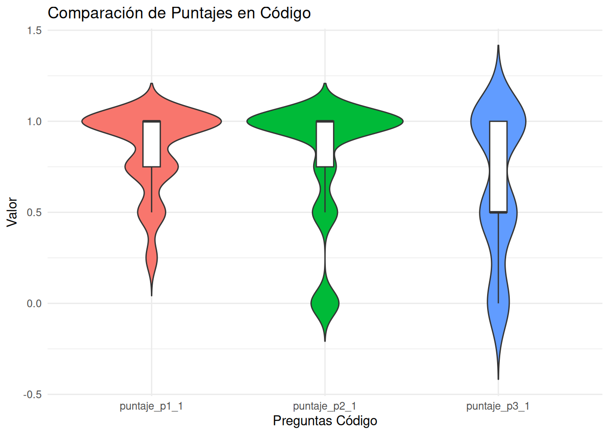
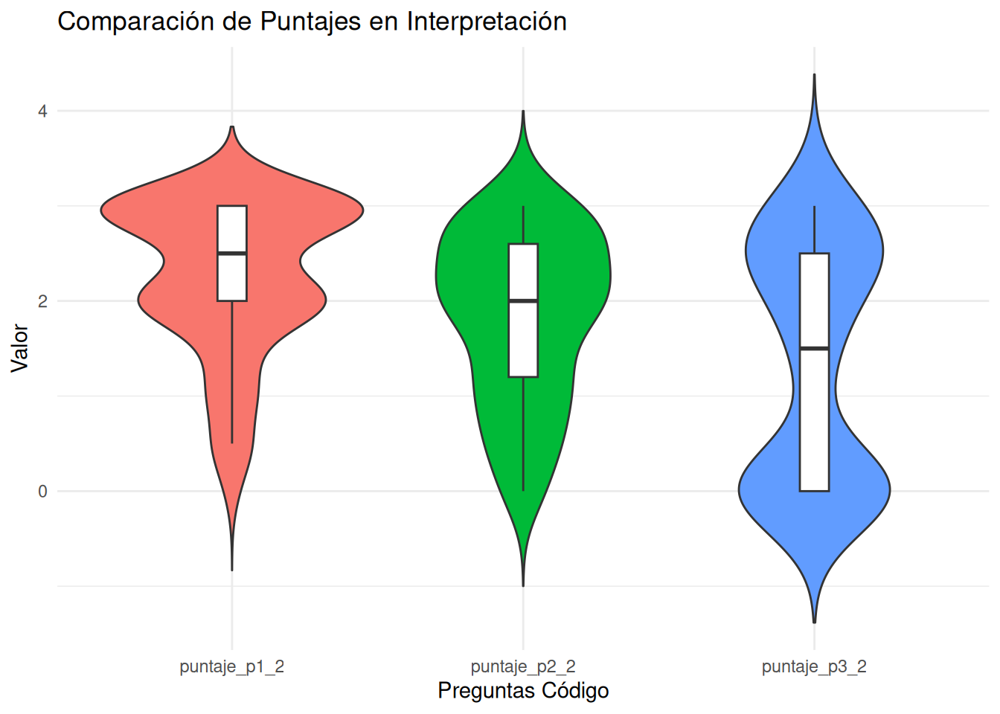
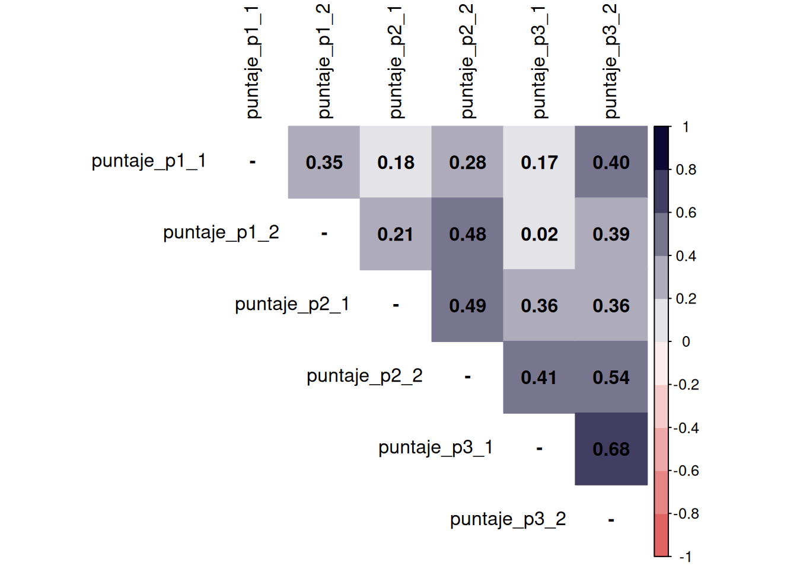
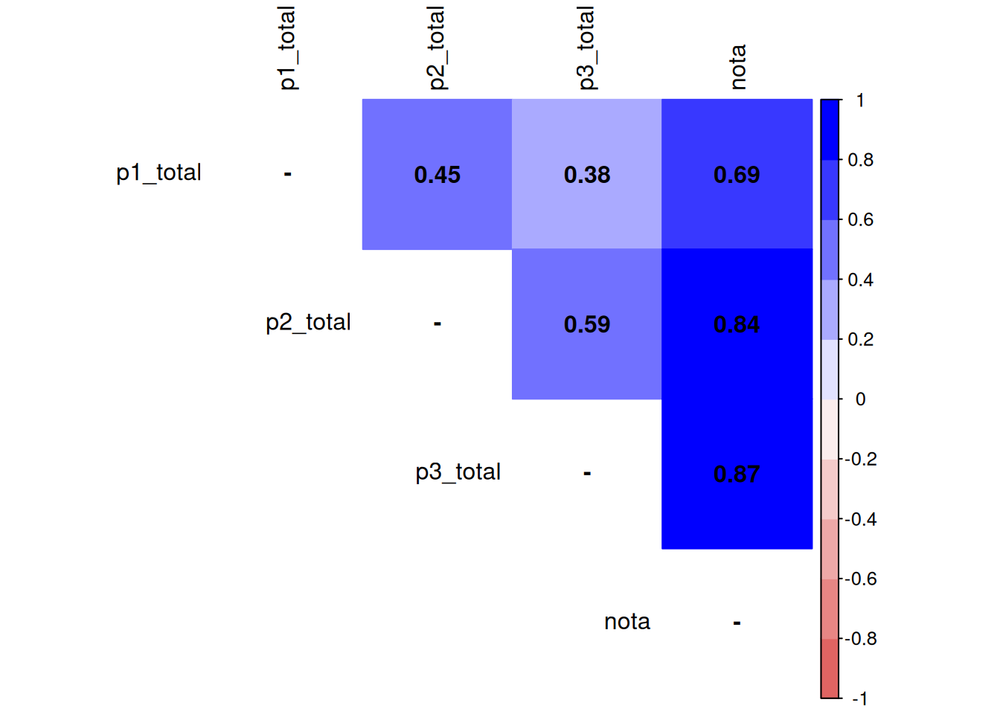
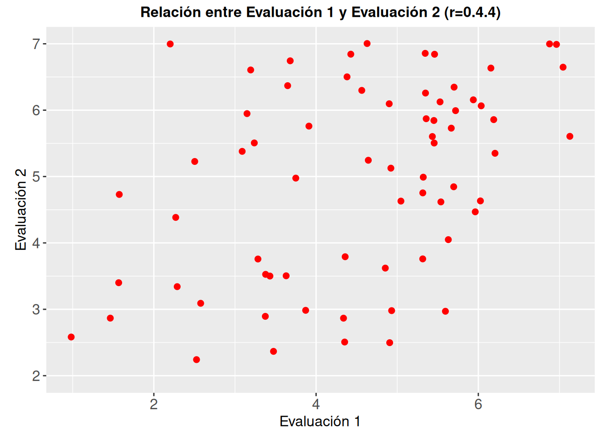

pacman::p_load(tidyverse, sjmisc, sjPlot, kableExtra, sjlabelled, readxl, here, googlesheets4, janitor)Reporte Evaluación 2
info
mail-UCursos
Este reporte realiza un análisis de la Evaluación 2 sobre la Unidad 2: Bivariada
Pauta y recorrecciones
La pauta de evaluación se puede revisar aquí
Librerías, datos y ajustes
[1] "Nº" "Persona" "RUT"
[4] "Puntaje P1_1" "Puntaje P1_2" "Puntaje P2_1"
[7] "Puntaje P2_2A" "Puntaje P2_2B" "Puntaje P2_2C"
[10] "Puntaje P2_2" "Puntaje P3_1" "Puntaje P3_2"
[13] "P1_total" "P2_total" "P3_total"
[16] "Puntaje total" "Nota" "Asistida"
[19] "Asistida_ult_practico" "Nota_p1" Etiquetados
# Label variables
prueba2$puntaje_p1_1 <- set_label(x = prueba2$puntaje_p1_1,
label = "Correlación: Código")
prueba2$puntaje_p1_2 <- set_label(x = prueba2$puntaje_p1_2,
label = "Correlación: Intepretación")
prueba2$puntaje_p2_1 <- set_label(x = prueba2$puntaje_p2_1,
label = "Matriz cor: Código")
prueba2$puntaje_p2_2a <- set_label(x = prueba2$puntaje_p2_2a,
label = "Matriz cor: Interpretación significación")
prueba2$puntaje_p2_2b <- set_label(x = prueba2$puntaje_p2_2b,
label = "Matriz cor: Interpretación perdidos")
prueba2$puntaje_p2_2c <- set_label(x = prueba2$puntaje_p2_2c,
label = "Matriz cor: Interpretación tipo")
prueba2$puntaje_p2_2 <- set_label(x = prueba2$puntaje_p2_2,
label = "Matriz cor: Interpretación total")
prueba2$puntaje_p3_1 <- set_label(x = prueba2$puntaje_p3_1,
label = "Chi: Código")
prueba2$puntaje_p3_2 <- set_label(x = prueba2$puntaje_p3_2,
label = "Chi: Interpretación")
prueba2$p1_total <- set_label(x = prueba2$p1_total,
label = "Pregunta 1")
prueba2$p2_total <- set_label(x = prueba2$p2_total,
label = "Pregunta 2")
prueba2$p3_total <- set_label(x = prueba2$p3_total,
label = "Pregunta 3")
prueba2$nota <- set_label(x = prueba2$nota,
label = "Nota")
# Cambiar inasistentes a NA
filas_a_modificar <- which(!is.na(prueba2$nota) & prueba2$nota == 1)
filas_a_modificar[1] 18 19 # Asignamos NA a todas las columnas de las filas identificadas
prueba2[filas_a_modificar, ] <- NADescriptivos
Tabla descriptiva
prueba2 %>% descr(., show = c("label","range", "mean", "sd", "n"))%>% kable(.,"markdown", digits=2)| var | label | n | mean | sd | range | |
|---|---|---|---|---|---|---|
| 8 | puntaje_p1_1 | Correlación: Código | 83 | 0.85 | 0.22 | 0.75 (0.25-1) |
| 9 | puntaje_p1_2 | Correlación: Intepretación | 83 | 2.25 | 0.81 | 3 (0-3) |
| 10 | puntaje_p2_1 | Matriz cor: Código | 83 | 0.80 | 0.34 | 1 (0-1) |
| 12 | puntaje_p2_2a | Matriz cor: Interpretación significación | 83 | 0.54 | 0.38 | 1 (0-1) |
| 13 | puntaje_p2_2b | Matriz cor: Interpretación perdidos | 83 | 0.65 | 0.36 | 1 (0-1) |
| 14 | puntaje_p2_2c | Matriz cor: Interpretación tipo | 83 | 0.63 | 0.49 | 1 (0-1) |
| 11 | puntaje_p2_2 | Matriz cor: Interpretación total | 83 | 1.82 | 0.89 | 3 (0-3) |
| 15 | puntaje_p3_1 | Chi: Código | 82 | 0.64 | 0.39 | 1 (0-1) |
| 16 | puntaje_p3_2 | Chi: Interpretación | 82 | 1.35 | 1.24 | 3 (0-3) |
| 5 | p1_total | Pregunta 1 | 83 | 3.10 | 0.91 | 3.75 (0.25-4) |
| 6 | p2_total | Pregunta 2 | 83 | 2.53 | 1.10 | 4 (0-4) |
| 7 | p3_total | Pregunta 3 | 83 | 1.97 | 1.53 | 4 (0-4) |
| 17 | puntaje_total | puntaje_total | 83 | 7.60 | 2.88 | 10 (2-12) |
| 3 | nota | Nota | 83 | 4.80 | 1.44 | 5 (2-7) |
| 1 | asistida | asistida | 83 | 74.75 | 15.84 | 70.8 (29.2-100) |
| 2 | asistida_ult_practico | asistida_ult_practico | 84 | 0.54 | 0.50 | 1 (0-1) |
| 4 | nota_p1 | nota_p1 | 70 | 4.50 | 1.43 | 6 (1-7) |
Nota
media_nota <- mean(prueba2$nota, na.rm = TRUE)
sd_nota <- sd(prueba2$nota, na.rm = TRUE)
hist(prueba2$nota, prob = TRUE, col = "lightblue",
main = "Histograma de Notas",
xlab = "Nota", ylab = "Densidad")
abline(v = media_nota, col = "red", lwd = 2, lty = 2)
prueba2 <- prueba2 %>% mutate(notas_cat=cut(nota, breaks=c(-Inf,4,5,6, Inf), labels=c("Menor a 4.0","4.0-5.0","5.0-6.0","6.0-7.0")))
frq(prueba2$notas_cat, out="browser", show.na = FALSE, title = "Rangos de notas")| val | frq | raw.prc | valid.prc | cum.prc | |
| Menor a 4.0 | 29 | 32.58 | 34.94 | 34.94 | |
| 4.0-5.0 | 14 | 15.73 | 16.87 | 51.81 | |
| 5.0-6.0 | 20 | 22.47 | 24.10 | 75.90 | |
| 6.0-7.0 | 20 | 22.47 | 24.10 | 100.00 | |
| total N=83 · valid N=63 · x̄=2.37 · σ=1.20 | |||||
prueba2 <- prueba2 %>% dplyr::select(-notas_cat)Preguntas
# violin plot
prueba2_long <- prueba2 %>%
pivot_longer(cols=starts_with("p"),
names_to = "Prueba",
values_to = "Valor")
prueba2_long %>% filter(Prueba=="p1_total" |Prueba=="p2_total" | Prueba=="p3_total") %>%
ggplot(., aes(x = Prueba, y = Valor, fill = Prueba)) +
geom_violin(trim = FALSE) +
geom_boxplot(width = 0.1, fill = "white", outlier.shape = NA) +
theme_minimal() +
labs(title = "Comparación de Preguntas",
x = "Preguntas",
y = "Valor") +
theme(legend.position = "none")prueba2_long %>% filter(Prueba=="puntaje_p1_1" |Prueba=="puntaje_p2_1" | Prueba=="puntaje_p3_1") %>%
ggplot(., aes(x = Prueba, y = Valor, fill = Prueba)) +
geom_violin(trim = FALSE) +
geom_boxplot(width = 0.1, fill = "white", outlier.shape = NA) +
theme_minimal() +
labs(title = "Comparación de Puntajes en Código",
x = "Preguntas Código",
y = "Valor") +
theme(legend.position = "none")
prueba2_long %>% filter(Prueba=="puntaje_p1_2" |Prueba=="puntaje_p2_2" | Prueba=="puntaje_p3_2") %>%
ggplot(., aes(x = Prueba, y = Valor, fill = Prueba)) +
geom_violin(trim = FALSE) +
geom_boxplot(width = 0.1, fill = "white", outlier.shape = NA) +
theme_minimal() +
labs(title = "Comparación de Puntajes en Interpretación",
x = "Preguntas Código",
y = "Valor") +
theme(legend.position = "none")
Asociaciones
M1 <- prueba2 %>% select(puntaje_p1_1, puntaje_p1_2, puntaje_p2_1, puntaje_p2_2, puntaje_p3_1, puntaje_p3_2) %>% cor(., use = "complete.obs")
diag(M1) <- NA
corrplot::corrplot(M1,
method = "color",
addCoef.col = "black",
type = "upper",
tl.col = "black",
col = colorRampPalette(c("#E16462", "white", "#0D0834"))(10),
bg = "white",
na.label = "-") 
M2 <- prueba2 %>% select(p1_total, p2_total, p3_total, nota) %>% cor(., use = "complete.obs")
diag(M2) <- NA
corrplot::corrplot(M2,
method = "color",
addCoef.col = "black",
type = "upper",
tl.col = "black",
col = colorRampPalette(c("#E16462", "white", "blue"))(10),
bg = "white",
na.label = "-") 
Asistencia
cor(prueba2$nota, prueba2$asistida,use = "complete.obs")[1] 0.3438108ggplot(prueba2, aes(x = asistida, y = nota)) +
geom_jitter(width = 0.2, color = "red", size = 2) +
labs(title = "Relación entre asistencia y notas en Evaluación 2 (r=0.34)") +
labs(x = "Asistencia", y = "Nota") +
theme(axis.title = element_text(size = 12), # Tamaño de las etiquetas de los ejes
axis.text = element_text(size = 12)) + # Tamaño del texto de los ejes
theme(aspect.ratio = 1/1.5) +
theme(plot.title = element_text(size = 12, # Tamaño del título
face = "bold", # Tipo de letra (negrita)
hjust = 0.5)) 
prueba2 <- prueba2 %>% mutate(asist_total_cat=cut(asistida, breaks=c(-Inf,40,50,60,70,80,90,Inf), labels=c("Menos de 40%","50%","60%","70%","80%","90%", "100%")))
frq(prueba2$asist_total_cat, out="browser", show.na = FALSE, title = "Asistencia")| val | frq | raw.prc | valid.prc | cum.prc | |
| Menos de 40% | 2 | 2.25 | 2.41 | 2.41 | |
| 50% | 6 | 6.74 | 7.23 | 9.64 | |
| 60% | 9 | 10.11 | 10.84 | 20.48 | |
| 70% | 10 | 11.24 | 12.05 | 32.53 | |
| 80% | 25 | 28.09 | 30.12 | 62.65 | |
| 90% | 17 | 19.10 | 20.48 | 83.13 | |
| 100% | 14 | 15.73 | 16.87 | 100.00 | |
| total N=83 · valid N=69 · x̄=4.89 · σ=1.58 | |||||
prueba2 %>% # se especifica la base de datos
dplyr::select(asist_total_cat, nota) %>% # se seleccionan las variables
dplyr::group_by(Asistencia=sjlabelled::as_label(asist_total_cat)) %>% # se agrupan por la variable categórica y se usan sus etiquetas con as_label
dplyr::summarise(Obs.=n(),Promedio=round(mean(nota),2),SD=round(sd(nota),2)) %>% # se agregan las operaciones a presentar en la tabla
kable(, format = "markdown") # se genera la tabla| Asistencia | Obs. | Promedio | SD |
|---|---|---|---|
| Menos de 40% | 2 | 3.31 | 0.62 |
| 50% | 6 | 3.44 | 0.81 |
| 60% | 9 | 4.31 | 1.73 |
| 70% | 10 | 5.66 | 1.45 |
| 80% | 25 | 4.30 | 1.46 |
| 90% | 17 | 5.07 | 0.93 |
| 100% | 14 | 5.85 | 0.89 |
| NA | 6 | NA | NA |
prueba2 <- prueba2 %>% dplyr::select(-asist_total_cat)Correlación entre evaluaciones
cor(prueba2$nota, prueba2$nota_p1, use = "complete.obs")[1] 0.4392045ggplot(prueba2, aes(x = nota_p1, y = nota)) +
geom_jitter(width = 0.2, color = "red", size = 2) +
labs(title = "Relación entre Evaluación 1 y Evaluación 2 (r=0.4.4)") +
labs(x = "Evaluación 1", y = "Evaluación 2") +
theme(axis.title = element_text(size = 12), # Tamaño de las etiquetas de los ejes
axis.text = element_text(size = 12)) + # Tamaño del texto de los ejes
theme(aspect.ratio = 1/1.5) +
theme(plot.title = element_text(size = 12, # Tamaño del título
face = "bold", # Tipo de letra (negrita)
hjust = 0.5)) 